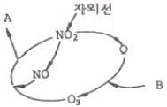
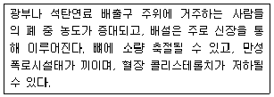
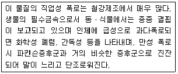
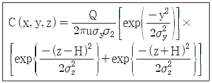
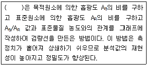
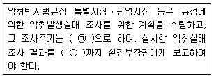
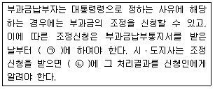
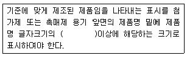

대기환경산업기사 (2018-09-15 기출문제)
1과목: 대기오염개론
1. 상대습도가 70%이고, 상수를 1.2로 정의할 때, 거시거리가 10km라면 농도는 대략 얼마인가?
- 50μg/m3
- 120μg/m3
- 200μg/m3
- 280μg/m3
(정답률: 81%)

2. 실제 굴뚝높이 120m에서 배출가스의 수직 토출속도가 20m/s, 굴뚝 높이에서의 풍속은 5m/s이다. 굴뚝의 유효고도가 150m가 되기 위해서 필요한 굴뚝의 직경은? (단, ΔH=(1.5×Vs)ㆍD/U를 이용할 것)
- 2.5m
- 5m
- 20m
- 25m
(정답률: 71%)
3. 다음 그림은 탄화수소가 존재하지 않는 경우 NO2의 광화학싸이클(Photolyic cycle)이다. 그림의 A가 O2일 때 B에 해당되는 물질은?

- NO
- CO2
- NO2
- O2
(정답률: 90%)
4. 연소과정 중 고온에서 발생하는 주된 질소화합물의 형태로 가장 적합한 것은?
- N2
- NO
- NO2
- NO3
(정답률: 77%)
5. 다음에서 설명하는 오염물질로 가장 적합한 것은?

- 구리
- 카드뮴
- 바나듐
- 비소
(정답률: 81%)
6. 다이옥신에 관한 설명으로 가장 거리가 먼 것은?
- PCB의 불완전연소에 의해서 발생한다.
- 저온에서 촉매화 반응에 의해 먼지와 결합하여 생성한다.
- 수용성이 커서 토양오염 및 하천오염의 주원인으로 작용한다.
- 다이옥신은 두 개의 산소, 두 개의 벤젠, 그 외 염소가 결합된 방향족 화합물이다.
(정답률: 69%)
7. 다음 오염물질에 관한 설명으로 가장 적합한 것은?

- 납
- 불소
- 구리
- 망간
(정답률: 78%)
8. 대기오염물질이 인체에 미치는 영향으로 가장 거리가 먼 것은?
- 이산화질소의 유독성은 일산화질소의 독성보다 강하여 인체에 영향을 끼친다.
- 3,4 - 벤조피렌 같은 탄화수소 화합물은 발암성 물질로 알려져 있다.
- SO2는 고동도일수록 비강 또는 인후에서 많이 흡수되며 저농도인 경우에는 극히 저율로 흡수된다.
- 일산화탄소는 인체 혈액 중의 헤모글로빈과 결합하기 매우 용이하나, 산소보다 낮은 결합력을 가지고 있다.
(정답률: 83%)
9. 대기내 질소산화물(NOx)이 LA 스모그와 같이 광화학 반응을 할 때, 다음 중 어떤 탄화수가 주된 역할을 하는가?
- 파라핀계 탄화수소
- 메탄계 탄화수소
- 올레핀계 탄화수소
- 프로판계 탄화수소
(정답률: 90%)
10. 다음 반사영역이 고려된 가우시간 확산모델에서 각 항에 대한 설명으로 옳지 않은 것은?

- y : 수직방향의 확산폭이다.
- Z : 농도를 구하려는 지점의 높이로서 농도 지점과 지표면으로부터의 수직거리이다.
- u : 굴뚝높이의 풍속을 말한다.
- H : 유효굴뚝높이다.
(정답률: 73%)
11. 1984년 인도의 보팔시에서 발행한 대기오염사건의 주원인 물질은?
- 황화수소
- 황산화물
- 멀캡탄
- 메틸이소시아네이트
(정답률: 87%)
12. 가솔린자동차의 엔진작동상태에 따른 일반적인 배기가스 조성 중 감속시에 가장 큰 농도 증가를 나타내는 물질은? (단, 정상운행 조건대비)
- NO2
- H2O
- CO2
- HC
(정답률: 88%)
13. 굴뚝에서 배출되는 연기의 형태가 Lofting형일 때의 대기상태로 옳은 것은? (단, 보기 중 상과 하의 구분은 굴뚝 높이 기준)
- 상 : 불안정, 하 : 불안정
- 상 : 안정, 하 : 안정
- 상 : 안정, 하 : 불안정
- 상 : 불안정, 하 : 안정
(정답률: 78%)
14. 지상 10m에서의 풍속이 8m/s 이라면 지상 60m에서의 풍속(m/s)은? (단, P=0.12, Deacon식을 적용)
- 약 8.0
- 약 9.9
- 약 12.5
- 약 14.8
(정답률: 73%)
15. 다음 중 기후ㆍ생태계 변화유발물질과 가장 거리가 먼 것은?
- 육불화황
- 메탄
- 수소염화불화탄소
- 염화나트륨
(정답률: 82%)
16. PAN(Peroxyacety1 nitrate)의 생성반응식으로 옳은 것은?
- CH3COOO+NO2→CH3COOONO2
- C6H5COOO+NO2→C6H5COOONO2
- RCOO+O2→RO2+CO2
- RO+NO2→RONO2
(정답률: 76%)
17. 단열압축에 의하여 가열되어 하층의 온도가 낮은 공기와의 경계에 역전층을 형성하고 매우 안정하며 대기오염물질의 연진확산을 억제하는 역전현상은?
- 전선역전
- 이류역전
- 복사역전
- 침강역전
(정답률: 61%)
18. 다음 수용모델과 분산모델에 관한 설명으로 가장 거리가 먼 것은?
- 분산모델은 지형 및 오염원의 조업조건에 영향을 받으며 미래의 대기질 예측을 할 수 있다.
- 수용모델은 수용체에서 오염물질의 특성을 분석한 후 오염원의 기여도를 평가하는 것이다.
- 분산모델은 특정오염원의 영향을 평가할 수 있는 잠재력을 가지고 있으며, 기상과 관련하여 대기 중의 특성을 적절하게 묘사할 수 있어 정확한 결과를 도출할 수 있다.
- 분산모델은 특정한 오염원의 배출속도와 바람에 의한 분산요인을 입력자료로 하여 수용체 위치에서의 영향을 계산한다.
(정답률: 66%)
19. A공장의 현재 유효연돌고가 44m이다. 이 때의 농도에 비해 유효연돌고를 높여 최대지표농도를 1/2로 감소시키고자 한다. 다른 조건이 모두 같다고 가정할 때 sutton식에 의한 유효연돌고는?
- 약 62m
- 약 66m
- 약 71m
- 약 75m
(정답률: 50%)
20. 다음 특정물질 중 오존 파괴지수가 가장 큰 것은?
- HCFC-261
- HCFC-221
- CFC-115
- CC14
(정답률: 69%)
2과목: 대기오염 공정시험 기준(방법)
21. 다음은 원자흡수분광광도법에서 검량선 작성과 정량법에 관한 설명이다. ()안에 가장 적합한 것은?

- 내부표준물질법
- 외부표준물질법
- 표준첨가법
- 검정곡선법
(정답률: 67%)
22. 환경대기 내의 옥시던트(오존으로서) 측정방법 중 중성요오드화 칼륨법(수동)에 관한 설명으로 옳지 않은 것은?
- 시료를 채취한 후 1시간 이내에 분석할 수 있을 때 사용할 수 있으며 1시간 이내에 측정할 수 없을 때는 알칼리성 요오드화 칼륨법을 사용하여야 한다.
- 대기 중에 존재하는 오존과 다른 옥시던트가 pH6.8의 요오드화 칼륨 용액에 흡수되면 옥시던트 농도에 해당하는 요오드가 유리되며 이 유리된 요오드를 파장 217mm에서 흡광도를 측정하여 정량한다.
- 산화성 가스로는 아황산가스 및 황화수소가 있으며 이들 부(-)의 영향을 미친다.
- PAN은 오돈의 당량, 물, 농도의 약 50%의 영향을 미친다.
(정답률: 68%)
23. 다음 각 장치 중 이온크로마토그래피의 주요 장치 구성과 거리가 먼 것은?
- 용리액조
- 송액펌프
- 써프렛서
- 회전섹터
(정답률: 79%)
24. 화학분석 일반사항에 관한 설명으로 옳지 않은 것은?
- 표준품을 채취할 때 표준액이 정수로 기재되어 있어도 실험자가 환산하여 기재수치에 “약”자를 붙여 사용할 수 있다.
- “방울수”라 함은 20℃에서 정제수 20방울을 떨어뜨릴 때 그 부피가 약 1mL되는 것을 뜻한다.
- 실온은 1~35℃로 하고, 찬 곳은 따로 규정이 없는 한 0~15℃의 곳을 뜻한다.
- “밀봉용기”라 함은 물질을 취급 또는 보관하는 동안에 외부로부터의 공기 또는 다른 가스가 침입되지 않도록 내용물을 보호하는 용기를 뜻한다.
(정답률: 82%)
25. 자외선가시선분광법에 이용되는 램버어트비어(Lambert-Beer)의 법칙을 옳게 나타낸 식은? (단, Io:입사광 강도, It:투사광 강도, c:농도, ℓ:빛의 투사거리, ε:흡광계수)
- Io=Itㆍ10-εcℓ
- Io=Itㆍ100-εcℓ
- It=Ioㆍ10-εcℓ
- It=Ioㆍ100-εcℓ
(정답률: 78%)
26. 현행 대기오염공정시험기준에서 환경대기 중 탄화수소 측정방법(수소염이온화 검출기법)으로 규정되지 않은 것은?
- 총탄화수소 측정법
- 램프식 탄화수소 측정법
- 비메탄 탄화수소 측정법
- 활성
(정답률: 69%)
27. 환경대기 중의 먼지 측정에 사용되는 저용량 공기 시료채취기 장치 중 흡인펌프가 갖추어야 하는 조건으로 거리가 먼 것은?
- 연속해서 30일 이상 사용할 수 있어야 한다.
- 진공도가 높아야 한다.
- 맥동이 순차적으로 발생되어야 한다.
- 유량이 크고 운반이 용이하여야 한다.
(정답률: 73%)
28. 굴뚝을 통하여 대기 중으로 배출되는 가스상물질의 시료 채취방법 중 채취부에 관한 기준으로 옳은 것은?
- 수은 마노미터는 대기와 압력차가 50mmHg 이상인 것을 쓴다.
- 펌프보호를 위해 실리콘 재질의 가스건조탑을 쓰며, 건조제는 주로 활성알루미나를 쓴다.
- 펌프는 배기능력 10~20L/분인 개방형인 것을 쓴다.
- 가스미터는 일회전 1L의 습식 또는 건식 가스미터로 온도계와 압력계가 붙어 있는 것을 쓴다.
(정답률: 52%)
29. 굴뚝 배출가스 중 먼지 측정을 위해 수동식측정법으로 측정하고자 할 때 사용되는 분석 기기에 대한 설명으로 거리가 먼 것은?
- 흡입노즐은 안과 밖의 가스 흐름이 흐트러지지 않도록 흡입노즐 안지름(d)은 1mm 이상으로 한다.
- 흡입노즐의 꼭지점은 30° 이하의 예각이 되도록 하고 매끈한 반구 모양으로 한다.
- 분석용 저울은 0.1mg까지 정확하게 측정할 수 있는 저울을 사용하여야 하며 측정표준소급성이 유지된 표준기에 의해 교정되어야 한다.
- 건조용기는 시료채취 여과지의 수분평형을 유지하기 위한 용기로서 20±5.6℃ 대기 압력에서 적어도 24시간을 건조시킬 수 있어야 한다.
(정답률: 62%)
30. 화학분석 일반사항에 관한 설명으로 옳지 않은 것은?
- 10억분율은 pphm로 표시하고 따로 표시가 없는 한 기체일 때는 용량 대 용량(V/V), 액체일 때는 중량 대 중량(W/W)을 표시한 것을 뜻한다.
- 냉수(冷水)는 15℃ 이하, 온수(溫水)는 60~70℃를 말한다.
- 각조의 시험은 따로 규정이 없는 한 상온에서 조작하고 조작 직 후 그 결과를 관찰한다.
- 황산(1:2)이라고 표시한 것은 황산 1용량에 물 2용량을 혼합한 것이다.
(정답률: 83%)
31. 굴뚝 배출가스 중 황산화물 측정 시 사용하는 아르세나조 Ⅲ법에서 사용되는 시약이 아닌 것은?
- 과산화수소수
- 아이소프로필알코올
- 아세트산바륨
- 수산화소듐
(정답률: 60%)
32. 배출가스 중의 비소화합물을 자외선가시선분광법으로 분석할 때 간섭물질에 관한 설명으로 옳지 않은 것은?
- 비소화합물 중 일부 화합물은 휘발성이 있으므로 채취 시료를 전처리하는 동안 비소의 손실 가능성이 있어 마이크로파산분해법으로 전처리하는 것이 좋다.
- 황화수소에 대한 영향은 아세트산납으로 제거할 수 있다.
- 안티몬은 스티빈(stibine)으로 산화되어 610nm에서 최대 흡수를 나타내는 착화합물을 형성케 함으로써 비소 측정에 간섭을 줄 수 있다.
- 메틸 비소화합물은 pH1에서 메틸수소화비소를 생성하여 흡수용액과 착화합물을 형성하고 총 비소 측정에 영향을 줄 수 있다.
(정답률: 72%)
33. 굴뚝 배출가스 중 황화수소를 아이오딘 적정법으로 분석할 때 적정시약은?
- 황산 용액
- 싸이오황산소듐 용액
- 티오시안산암모늄 용액
- 수산화소듐 용액
(정답률: 64%)
34. 이온크로마토그래피의 설치조건으로 거리가 먼 것은?
- 대형변압기, 고주파가열등으로부터 전자유도를 받지 않아야 한다.
- 부식성 가스 및 먼지발생이 적고 환기가 잘 되어야 한다.
- 실온 10~25℃, 상대습도 30~85% 범위로 급격한 온도변화가 없어야 한다.
- 공급전원은 기기의 사양에 지정된 전압 전기용량 및 주파수로 전압변동은 15% 이하여야 한다.
(정답률: 77%)
35. A농황산의 비중은 약 1.84이며, 농도는 약 95%이다. 이것을 몰 농도로 환산하면?
- 35.6 mol/L
- 22.4 mol/L
- 17.8 mol/L
- 11.2 mol/L
(정답률: 60%)
36. 비분산 적외선 분석계의 측정기기 성능 유지기준으로 거리가 먼 것은?
- 재현성 : 동일 측정조건에서 제로가스와 스팬가스를 번갈아 10회 도입하여 각각의 측정값이 평균으로부터 편차를 구하며 이 편차는 전체 눈금의 ±1% 이내이어야 한다.
- 감도 : 최대눈금범위의 ±1% 이하에 해당하는 농도변화를 검출할 수 있는 것이어야 한다.
- 유량변화에 대한 안정성 : 측정가스의 유량이 표시한 기준유량에 대하여 ±2% 이내에서 변동하여도 성능에 지장이 있어서는 안된다.
- 전압 변동에 대한 안정성 : 전원전압이 성정 전압의 ±10% 이내로 변화하였을 때 지시값 변화는 전체 눈금의 ±1% 이내여야 하고, 주파수가 설정 주파수의 ±2%에서 변동해도 성능에 지장이 있어서는 안된다.
(정답률: 71%)
37. 굴뚝으로 배출되는 온도 150℃, 상압의 배출가스를 피토우관 측정한 결과 동압이 120mmH2O였다. 가스 유속(m/sec)은 약 얼마인가? (단, 피토우관계수 =1, 공기 밀도 = 1.3kg/m3) (문제 오류로 실제 시험에서는 3, 4번이 정답처리 되었습니다. 여기서는 3번을 누르면 정답 처리 됩니다.)(오류 신고가 접수된 문제입니다. 반드시 정답과 해설을 확인하시기 바랍니다.)
- 9m/sec
- 11m/sec
- 13m/sec
- 17m/sec
(정답률: 68%)
38. 굴뚝직경 1.7m인 원형단면 굴뚝에서 배출가스 중 먼지(반자동식 측정)를 측정하기 위한 측정점수로 적절한 것은?
- 4
- 8
- 12
- 16
(정답률: 67%)
39. A사업장의 굴뚝에서 실측한 SO2 농도가 600ppm이었다. 이 때 표준산소 농도는 6%, 실측산소농도는 8%이었다면 오염물질의 농도는?
- 962.3ppm
- 692.3ppm
- 520ppm
- 425ppm
(정답률: 67%)
40. 원자흡수분광광도법에서 사용되는 용어에 관한 설명으로 옳지 않은 것은?
- 슬롯버너(Slot Burnerm Fish Tail Burner) : 가스의 분출구가 세극상(細隙狀)으로 된 버너
- 선프로파일(Line Profile) : 불꽃중에서의 광로(光路)를 길게 하고 흡수를 증대시키기 위하여 반사를 이용하여 불꽃중에 빛(光束)을 여러번 투과시키는 것
- 공명선(Resonance Line) : 원자가 외부로부터 빛을 흡수했다가 다시 먼저 상태로 돌아갈 때 (遷移) 방사하는 스펙트럼선
- 역화(Flame Back) : 불꽃의 연소속도가 크고 혼합기체의 분출속도가 작을 때 연소현상이 내부로 옮겨지는 것
(정답률: 76%)
3과목: 대기오염방지기술
41. 프로판(C3H8)과 부탄(C4H10)이 용적비로 4:1로 혼합된 가스 1Sm3를 연소할 때 발생하는 CO2량(Sm3)은? (단, 완전연소)
- 2.6
- 2.8
- 3.0
- 3.2
(정답률: 48%)
42. 승용차 1대당 1일 평균 50km를 운행하며 1km 운행에 26g의 CO를 방출한다고 하면 승용차 1대가 1일 배출하는 CO의 부피는? (단, 표준상태)
- 1625 L/day
- 1300 L/day
- 1180 L/day
- 1040 L/day
(정답률: 58%)
43. 흡수제의 구비조건과 관련된 설명으로 옳지 않은 것은?
- 흡수제의 손실을 줄이기 위하여 휘발성이 커야 한다.
- 흡수제가 화학적으로 유해가스 성분과 비슷할 때 일반적으로 용해도가 크다.
- 흡수율을 높이고 범람을 줄이기 위해서는 흡수제의 점도가 낮아야 한다.
- 빙점은 낮고 비점은 높아야 한다.
(정답률: 76%)
44. 일산화탄소 1Sm3를 연소시킬 경우 배출된 건연소가스량 중 (CO2)max(%)는? (단, 완전 연소)
- 약 28%
- 약 35%
- 약 52%
- 약 57%
(정답률: 47%)
45. 원심력 집진장치에 관한 설명으로 옳지 않은 것은?
- 처리 가능 입자는 3~100μm이며, 저효율 집진장치 중 집진율이 우수한 편이다.
- 구조가 간단하고 보수관리가 용이한 편이다.
- 고농도의 함진가스 처리에 적당하다.
- 점(흡)착성이 있거나 딱딱한 입자가 함유된 배출가스 처리에 적합하다.
(정답률: 63%)
46. 가스겉보기 속도가 1~2 m/sec, 액가스비는 0.5~1.5L/m3, 압력손실이 10~50mmH2O 정도인 처리장치는?
- 제트스크러버
- 분무탑
- 벤츄리스크러버
- 충전탑
(정답률: 58%)
47. 전기집진장치의 장점과 거리가 먼 것은?
- 집진 효율이 높다.
- 압력손실이 낮은 편이다.
- 전압변동과 같은 조건변동에 적응하기 쉽다.
- 고온(약 500℃ 정도) 가스 처리가 가능하다.
(정답률: 72%)
48. 에탄(C2H6) 5kg을 연소시켰더니 154000kcal의 열이 발생하였다. 탄소 1kg을 연소할 때 30000kcal 열이 생긴다면, 수소 1kg을 연소시킬 때 발생하는 열량은?
- 28000 kcal
- 30000 kcal
- 32000 kcal
- 34000 kcal
(정답률: 46%)
49. 중량비가 C=75%, H=17%, O=8%인 연료 2kg을 완전연소 시키는데 필요한 이론 공기량(Sm3)은? (단, 표준상태 기준)
- 약 9.7
- 약 12.5
- 약 21.9
- 약 24.7
(정답률: 57%)
50. 직경 21.2cm 원형관으로 34m3/min의 공기를 이동시킬 때 관내유속은?
- 약 1248m/min
- 약 963m/min
- 약 524m/min
- 약 482m/min
(정답률: 64%)
51. 염소가스 제거효율이 80%인 흡수탑 3개를 직렬로 연결했을 때, 유입공기 중 염소가스 농도가 75000ppm 이라면 유출공기 중 염소가스 농도는?
- 500ppm
- 600ppm
- 1000ppm
- 1200ppm
(정답률: 73%)
52. 점도에 관한 설명으로 옳지 않은 것은?
- 유체이동에 따라 발생하는 일종의 저항이다.
- 단위는 P(poise) 또는 cP를 사용하며, 20℃ 물의 점도는 약 1cP이다.
- 순물질의 기체나 액체에서 점도는 온도와 압력의 함수이다.
- 물질 특유의 성질에 해당한다.
(정답률: 64%)
53. A중유보일러의 배출가스를 분석한 결과, 부피비로 CO 3%, O2 7%, N2 90%일 때, 공기비는 약 얼마인가?
- 1.3
- 1.65
- 1.82
- 2.19
(정답률: 48%)
54. 황 함유량이 5%이고, 비중이 0.95인 중유를 300L/hr로 태울 경우 SO2의 이론 발생량(Sm3/hr)은 약 얼마인가? (단, 표준상태 기준)
- 8
- 10
- 12
- 15
(정답률: 56%)
55. 헨리법칙이 적용되는 가스가 물속에 2.0kg-mol/m3로 용해되어 있고, 이 가스의 분압은 19mmHg이다. 이 유해가스의 분압이 48mmHg가 되었다면, 이 때 물속의 가스농도(kg-mon/m3)는?
- 1.9
- 2.8
- 3.6
- 5.1
(정답률: 45%)
56. 공기 중의 산소를 필요로 하지 않고 분자 내의 산소에 의해서 내부연소하는 물질은?
- LNG
- 알코올
- 코크스
- 니트로글리세린
(정답률: 76%)
57. 연료에 대한 설명으로 거리가 먼 것은?
- 액체연료는 대체로 저장과 운반이 용이한 편이다.
- 기체연료는 연소효율이 높고 검댕이 거의 발생하지 않는다.
- 고체연료는 연소 시 다량의 과잉 공기를 필요로 한다.
- 액체연료는 황분이 거의 없는 청정연료이며, 가격이 싼 편이다.
(정답률: 72%)
58. 염소가스를 함유하는 배출가스를 45kg의 수산화나트륨이 포함된 수용액으로 처리할 때 제거할 수 있는 염소가스의 최대 양은?
- 약 20kg
- 약 30kg
- 약 40kg
- 약 50kg
(정답률: 50%)
59. 연소에 있어서 등가비(ø)와 공기비(m)에 관한 설명으로 옳지 않은 것은?
- 공기비가 너무 큰 경우에는 연소실 내의 온도가 저하되고, 배가스에 의한 열손실이 증가한다.
- 등가비(ø)＜1인 경우, 연료가 과잉인 경우로 불완전연소가 된다.
- 공기비가 너무 적을 경우 불완전연소로 연소효율이 저하된다.
- 가스버너에 비해 수평수동화격자의 공기비가 큰 편이다.
(정답률: 74%)
60. 유해가스 처리를 위한 장치 중 흡수장치와 거리가 먼 것은?
- 충전탑
- 흡착탑
- 다공판탑
- 벤츄리스크러버
(정답률: 56%)
4과목: 대기환경 관계 법규
61. 대기환경보전법규상 자동차 운행정지표지에 관한 내용으로 옳지 않은 것은?
- 운행정지기간 중 주차장소도 운행정지표시에 기재되어야 한다.
- 운행정지표지는 자동차의 전면유리 좌측하단에 붙인다.
- 운행정지표지는 운행정지기간이 지난 후에 담당공무원이 제거하거나 담당공무원의 확인을 받아 제거하여야 한다.
- 문자는 검정색으로, 바탕색은 노란색으로 한다.
(정답률: 83%)
62. 악취실태 조사기준에 관한 설명 중 ()안에 알맞은 것은?

- ㉠ 분기당 1회 이상, ㉡ 당해 12월 31일
- ㉠ 분기당 1회 이상, ㉡ 다음해 1월 15일
- ㉠ 반기당 1회 이상, ㉡ 당해 12월 31일
- ㉠ 반기당 1회 이상, ㉡ 다음해 1월 15일
(정답률: 67%)
63. 대기환경보전법규상 운행차의 정밀검사 방법ㆍ기준 및 검사대상 항목의 일반기준으로 거리가 먼 것은?
- 운행차의 정밀검사방법 및 기준 외의 사항에 대해서는 국토교통부장관이 정하여 고시한다.
- 휘발유와 가스를 같이 사용하는 자동차는 연료를 가스로 전환한 상태에서 배출가스검사를 실시하여야 한다.
- 특수 용도로 사용하기 위하여 특수장치 또는 엔진성능 제어장치 등을 부착하여 엔진최고회전수 등을 제한하는 자동차인 경우에는 해당 자동차의 측정 엔지뇌고회전수를 엔진정격회전수로 수정ㆍ적용하여 배출가스검사를 시행할 수 있다.
- 차대동력계상에서 자동차의 운전은 검사기술인력이 직접 수행하여야 한다.
(정답률: 64%)
64. 대기환경보전법령상 황함유기준을 초과하여 해당 유류의 회수처리명령을 받은 자가 시ㆍ도지사에게 이행완료보고서를 제출할 때 구체적으로 밝혀야 하는 사항으로 가장 거리가 먼 것은?
- 우류 제조회사가 실험한 황함유량 검사 성적서
- 해당 유류의 회수처리량, 회수처리방법 및 회수처리기간
- 해당 유류의 공급기간 또는 사용기간과 공급량 또는 사용량
- 저황유의 공급 또는 사용을 증명할 수 있는 자료 등에 관한 사항
(정답률: 67%)
65. 실내공기질 관리법규상 “공항시설 중 여객터미널”의 PM-10(μg/m3)실내공기질 유지기준은?(관련 규정 개정전 문제로 여기서는 기존 정답인 2번을 누르면 정답 처리됩니다. 자세한 내용은 해설을 참고하세요.)
- 200 이하
- 150 이하
- 100 이하
- 25 이하
(정답률: 68%)
66. 대기환경보전법령상 대기오염물질발생량에 따른 사업장 종별 분류기준에 관한 사항으로 옳지 않은 것은?
- 대기오염물질발생량의 합계가 연간 100톤 발생하는 사업장은 1종사업장에 해당한다.
- 대기오염물질발생량의 합계가 연간 80톤 발생하는 사업장은 1종사업장에 해당한다.
- 대기오염물질발생량의 합계가 연간 30톤 발생하는 사업장은 3종사업장에 해당한다.
- 대기오염물질발생량의 합계가 연간 3톤 발생하는 사업장은 4종사업장에 해당한다.
(정답률: 78%)
67. 대기환경보전법규상 배출허용기준 초과와 관련한 개선명령을 받은 경우로서 개선계획서에 포함되어야 할 사항과 가장 거리가 먼 것은? (단, 개선하여야 할 사항이 배출시설 또는 방지시설인 경우)
- 배출시설 및 방지시설의 개선명세서 및 설계도
- 오염물질의 처리방식 및 처리효율
- 공사기간 및 공사비
- 배출허용기준 초과사유 및 대책
(정답률: 40%)
68. 대기환경보전법령상 기본부과금의 지역별부과계수에서 Ⅱ지역에 해당되는 부과계수는? (단, 지역구분은 국토의 계획 및 이용에 관한 법률에 따른 지역을 기준으로 하고, Ⅰ지역은 주거지역, Ⅱ지역은 공업지역, Ⅲ지역은 녹색지역을 대표지역으로 함)
- 2.0
- 1.5
- 0.5
- 1.0
(정답률: 64%)
69. 대기환경보전법규상 시설의 가동시간, 대기오염물질 배출량 등에 관한 사항을 대기오염물질 배출시설 및 방지시설의 운영기록부에 매일 기록하고, 최종 기재한 날부터 얼마동안 보존하여야 하는가?
- 6개월간
- 1년간
- 2년간
- 3년간
(정답률: 48%)
70. 대기환경보전법규상 가스를 연료로 하는 경자동차의 배출가스 보증기간 적용기준으로 옳은 것은? (단, 2016년 1월 1일 이후 제작자동차)
- 10년 또는 192.000km
- 2년 또는 160.000km
- 2년 또는 10.000km
- 6년 또는 100.000km
(정답률: 65%)
71. 다음은 대기환경보전법령상 부과금 조정신청에 관한 사항이다 ()안에 가장 적합한 것은?

- ㉠ 30일 이내, ㉡ 15일 이내
- ㉠ 30일 이내, ㉡ 30일 이내
- ㉠ 60일 이내, ㉡ 15일 이내
- ㉠ 60일 이내, ㉡ 30일 이내
(정답률: 63%)
72. 대기환경보전법령상 특별대책지역에서 휘발성유기화학물을 배출하는 시설로서 대통령령으로 정하는 시설은 환경부장관 등에게 신고하여야 하는데, 다음 중 “대통령령으로 정하는 시설”로 가장 거리가 먼 것은?
- 목재가공시설
- 주유소의 저장시설
- 저유소의 출하시설
- 세탁시설
(정답률: 81%)
73. 대기환경보전법령상 대기오염경보의 대상지역 경보단계 및 단계병 조치사항 중 “주의보발령” 시 조치사항으로 옳은 것은?
- 주민의 실외활동 및 자동차 사용의 자제 요청 등
- 주민의 실외활동 제한 요청 및 자동차 사용의 제한 요청 등
- 주민의 실외활동 제한 요청 및 자동차 사용의 제한 명령 등
- 주민의 실외활동 금지 요청 및 사업장의 조업시간 단축 요청 등
(정답률: 70%)
74. 다음은 대기환경보전법규상 첨가제ㆍ촉매제 제조기준에 맞는 제품의 표시방법(기준)이다. ()안에 알맞은 것은?

- 100분의 20
- 100분의 30
- 100분의 50
- 100분의 70
(정답률: 74%)
75. 실내공기질 관리법규상 실내공기질 권고기준(ppm)으로 옳은 것은? (단, “실내주차장”이며, “이산화질소”항목)
- 0.03 이하
- 0.⑤ 이하
- 0.06 이하
- 0.30 이하
(정답률: 43%)
76. 대기환경보전법규상 자동차연료형 첨가제의 종류와 가장 거리가 먼 것은?
- 유동성향상제
- 다목적첨가제
- 청정첨가제
- 매연억제제
(정답률: 59%)
77. 대기환경보전법령상 대기오염물질 배출사업자에게 배출부과금을 부과할 때 고려해야 하는 사항으로 가장 거리가 먼 것은? (단, 그 밖의 사항 등은 고려하지 않는다.)
- 배출혀용기준 초과여부
- 대기오염물질의 배출량 및 기간
- 배출되는 대기오염물질의 종류
- 부과대상업체의 경영현황
(정답률: 77%)
78. 환경정책기본법령상 대기환경기준으로 옳은 것은?
- SO2의 연간 평균치 - 0.⑤ppm 이하
- CO의 8시간 평균치 - 9ppm 이하
- NO2의 1시간 평균치 - 0.15ppm 이하
- PM-10의 24시간 평균치 - 50μg/m3 이하
(정답률: 52%)
79. 대기환경보전법규상 규모에 따른 자동차의 분류기준으로 옳지 않은 것은? (단, 2015년 12월 10일 이후)
- 경자동차 : 엔진배기량이 1,000cc 미만
- 소형 승용자동차 : 엔진배기량이 1,000cc 이상이고, 차량 총중량이 3.5톤 미만이며, 승차인원이 8명 이하
- 이륜자동차 : 차량 총 중량이 10톤을 초과하지 않는 것
- 초대형 화물자동차 : 차량 총중량이 15톤 이상
(정답률: 76%)
80. 실내공기질 관리법규상 규정하고 있는 오염물질에 해당하지 않는 것은?
- 브롬화수소(HBr)
- 미세먼지(PM-10)
- 폼알데하이드(Formaldehyde)
- 총부유세균(TAB)
(정답률: 75%)
농도 = (상수) x (물질의 양) / (공기의 부피)
물질의 양은 일정하므로, 공기의 부피가 증가하면 농도는 감소하고, 공기의 부피가 감소하면 농도는 증가한다. 거리가 10km이므로, 공기의 부피는 10km x 10km x 10km = 1,000,000,000 m3 이다.
따라서, 농도 = (1.2) x (물질의 양) / (1,000,000,000) 이다.
상대습도가 70%이므로, 물질의 양은 70% x (물의 부피) 이다. 물의 부피는 공기의 부피에 비해 매우 작으므로, 무시할 수 있다.
따라서, 농도 = (1.2) x (70%) / (1,000,000,000) = 0.00000084 g/m3 이다.
이 값을 μg/m3로 변환하면, 0.84 μg/m3 이다. 이 값은 보기에서 제시된 값 중에서 가장 가깝지만, 정답은 "120μg/m3" 이다. 이유는, 대기오염물질의 농도는 매우 작은 값이기 때문에, 일반적으로 μg/m3 단위로 표시한다. 따라서, 0.84 μg/m3을 120 μg/m3으로 변환한 것이다.